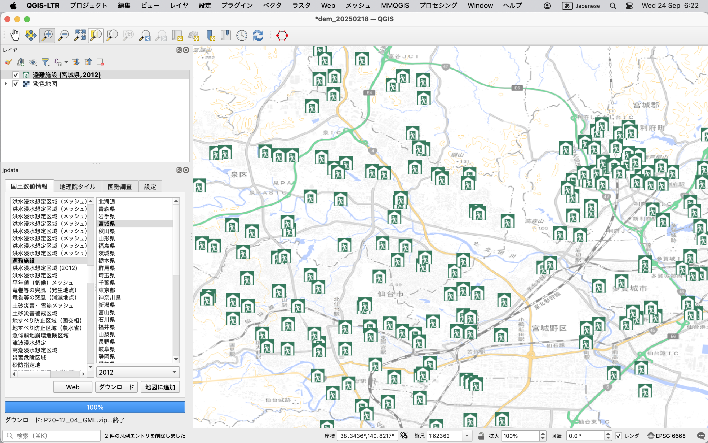
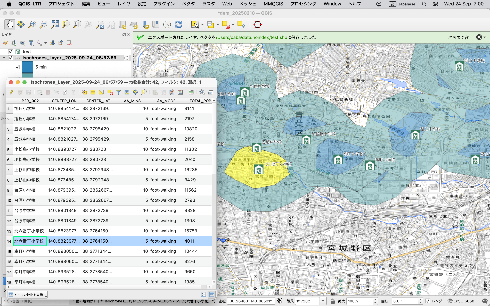

まず、点レイヤを用意します。
点レイヤは、QGISで作成したものでも、CSVなどでインポートしたものでも構いません。
ここでは、jpData を使って、宮城県の避難所データをインポートしました。

次に、メニューの Web から、ORS Tools を選びます。
ここで、Processing Tools タブを選びます。
Isochrones from Layer ボタンをクリックします。
すると、以下のようなダイアログが表示されます。

交通手段としては、自動車や徒歩などを選ぶことができます。
時間又は距離で、等高線を作成できます。
コンマで区切ることで、複数の値を指定できます。
ここでは5分、10分歩行で到達できる範囲を計算します。
また、ID フィールドには、点レイヤのIDフィールドを指定します。
ここでは、P20_002 フィールドを指定しました。
実行しましょう。
すると、以下のように、等高線が作成されます。

等高線は、ポリゴンレイヤとして作成されます。